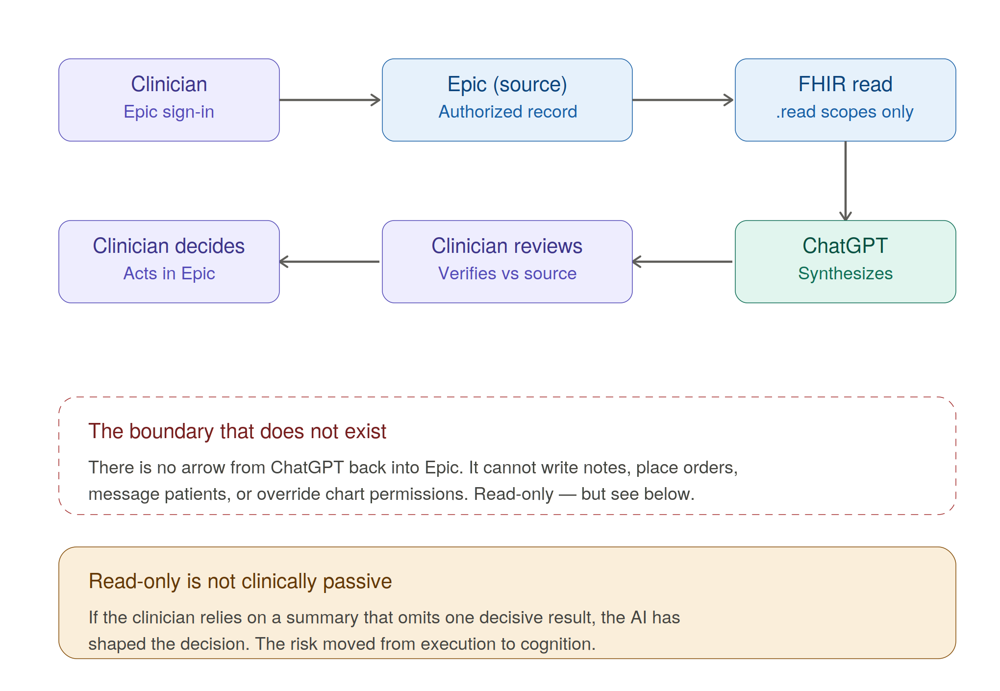
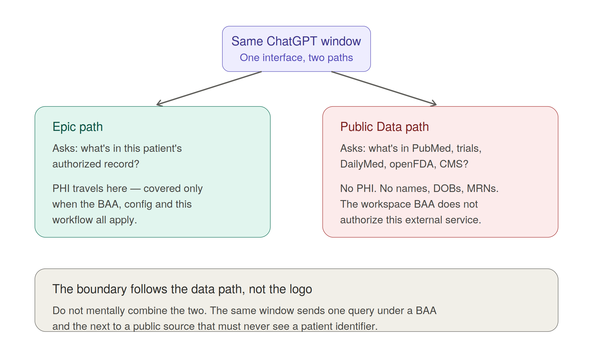
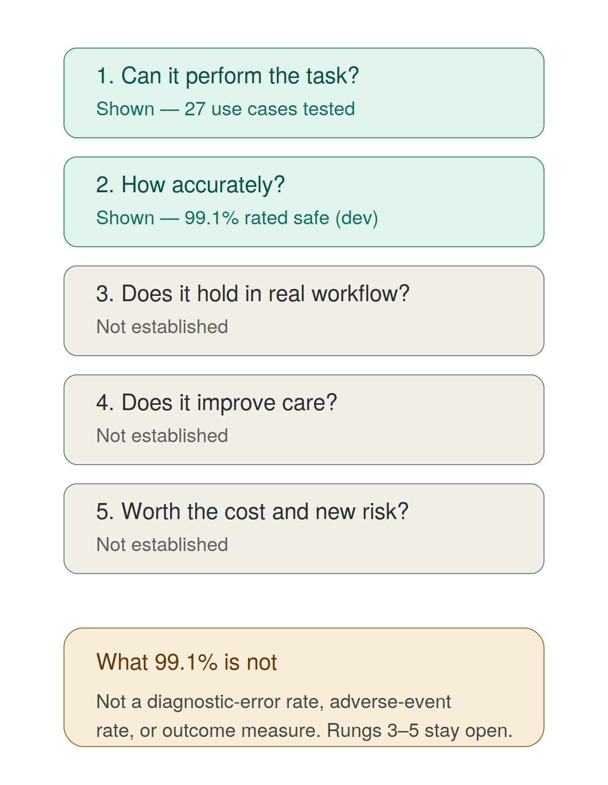
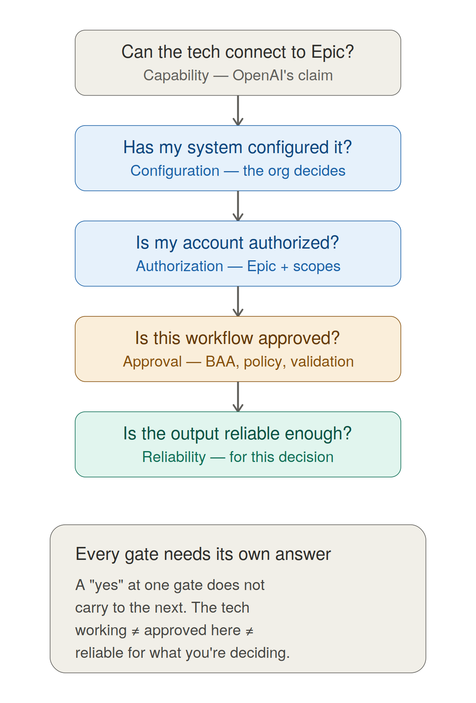

Few days back, OpenAI added a new capability to ChatGPT for Healthcare: approved healthcare organizations can connect their Epic environment so that ChatGPT can retrieve patient information a clinician is already authorized to see. OpenAI also released a separate Healthcare Public Data plugin for sources such as PubMed, ClinicalTrials.gov, DailyMed, RxNorm, openFDA and CMS data. (OpenAI)
The news is easy to summarize as "ChatGPT can now read Epic."
The actual development is more specific.
ChatGPT could already answer medical questions, summarize documents and search clinical literature. What changes is access to patient-specific context. In an approved organizational deployment, a clinician can ask questions about information in the patient's Epic record without manually copying that information into ChatGPT.
This is best understood as a feature release within ChatGPT for Healthcare, but it is an important one. OpenAI is moving from a general AI product adapted for healthcare toward a product connected to the systems where clinical work actually occurs.
It is also important to establish what the announcement does not say. OpenAI's announcement does not state that LSU Health, LCMC Health, Our Lady of the Lake, Ochsner Health or another LSU clinical partner has enabled this integration. Availability depends on each healthcare organization's own configuration and approval. (OpenAI Help Center)
For our faculty, two questions therefore need to remain separate:
"What can this technology do?"
and
"What is configured, approved, validated and appropriate where I am practicing?"
They are different questions.
What exactly did OpenAI release?
OpenAI now has several healthcare offerings that are easy to confuse.
ChatGPT for Healthcare is the enterprise product intended for healthcare organizations. ChatGPT for Clinicians is available to eligible verified U.S. clinicians. Health in ChatGPT is patient-facing.
The Epic connection is an organizational capability. It is not available simply because an individual physician has ChatGPT for Clinicians and an Epic account. OpenAI says the Epic plugin requires an approved ChatGPT for Healthcare or eligible HIPAA-enabled Enterprise workspace, health-system configuration and the clinician's own Epic authentication. (OpenAI Help Center)
The organization participates first. The individual clinician then connects through that organization's configured environment.
How does it actually work?
At a simplified level, the pathway looks like this:
Several technical standards make this possible. They sound more complicated than the underlying concepts.
FHIR: the data pathway
FHIR stands for Fast Healthcare Interoperability Resources. It is an HL7 standard for exchanging defined types of healthcare information through APIs.
An API is a controlled doorway through which one software system can request information from another.
ChatGPT is therefore not being given unrestricted access to Epic's underlying database. OpenAI requires the health system to configure its Epic FHIR R4 endpoint and an authorized application. The available information can include clinical notes, medications, conditions, encounters, laboratory results and other approved resources. (OpenAI Help Center)
FHIR organizes information into defined resource types. An Observation might contain a laboratory value or vital sign. MedicationRequest can describe a medication order. DiagnosticReport can contain a diagnostic report. DocumentReference can point to clinical documents. Encounter describes a clinical encounter.
The clinical translation is simple: FHIR provides a standardized way for an authorized application to ask Epic for specific categories of information.
FHIR does not determine whether that information is clinically correct.
If the medication list is wrong, FHIR can transmit the wrong list perfectly. If an outside record is absent, FHIR cannot recover it. If an old diagnosis remains on the problem list, standardized transport does not determine whether that diagnosis is still clinically meaningful.
FHIR helps solve data access. It does not solve data quality or clinical interpretation.
The supporting technical analysis for this review similarly identified patient-specific FHIR access as the central change from a general AI product without direct EHR context.
SMART on FHIR: putting the application into clinical context
The architecture also closely aligns with SMART on FHIR, the standard framework widely used to connect applications to FHIR-enabled EHRs.
SMART combines data access with authorization, user identity and clinical context. For example, an application launched from an EHR can potentially know which patient is currently open while still respecting the user's existing permissions. SMART defines scopes for FHIR resources, identity information, patient context and refresh tokens. (HL7)
In plain language:
- FHIR defines how clinical information is packaged and requested.
- SMART helps an application connect that information to the authorized user and clinical context.
OpenAI's public documentation explicitly describes FHIR R4, OAuth and scopes. It does not formally label the Epic plugin itself as a SMART on FHIR product. The architecture strongly aligns with SMART, but that distinction should be preserved.
OAuth and scopes: who can access what?
OAuth is part of the authorization machinery.
Think of it as a temporary electronic access badge rather than handing another application your Epic password.
Authentication asks, "Who are you?"
Authorization asks, "What are you allowed to access?"
OpenAI requires an Epic OAuth application, an OAuth client ID and secret, approved scopes and each clinician's own Epic sign-in. Connecting ChatGPT does not expand the clinician's existing Epic permissions. (OpenAI Help Center)
Scopes then define what the application can request.
OpenAI lists examples including:
user/Observation.readuser/MedicationRequest.readuser/DocumentReference.readuser/DiagnosticReport.readuser/Encounter.read
The operative word is read.
OpenAI says the current Epic connection cannot update the medical record, place orders, message patients or override existing chart permissions. (OpenAI Help Center)
That creates several separate access gates. The clinician needs appropriate Epic access. The application needs approved scopes. The ChatGPT workspace needs to permit the plugin. The organization needs to configure the connection.
Two hospitals can therefore both use Epic while providing very different AI environments.
What does offline_access mean?
OpenAI also lists offline_access among its common OAuth scopes.
The name sounds more concerning than its technical meaning.
SMART defines offline_access as permission to obtain a refresh token. Access tokens expire. A refresh token can allow an application to obtain another access token without forcing the clinician through the complete sign-in process again. (HL7)
It does not create write access.
It also does not, by itself, mean that ChatGPT is continuously monitoring charts after a clinician leaves.
It does illustrate why security review cannot stop at "the integration is read-only." Token lifetime, revocation, authentication, logging and session management still matter.
What happens when I ask ChatGPT about a patient?
Suppose a clinician asks:
"What has changed since this patient's previous visit?"
ChatGPT can retrieve authorized information from Epic, process it in the context of that question and return a synthesis. OpenAI specifically describes use cases involving recent laboratory findings, medication changes, specialist recommendations, unresolved follow-up issues and clinical timelines. Responses can point back to supporting chart information. (OpenAI)
That is more useful than asking a generic chatbot about an abstract clinical case because the AI has access to relevant patient context.
But retrieval and interpretation remain different functions.
The system may retrieve the correct facts and still misunderstand their clinical meaning.
It may produce an accurate timeline while omitting the event that matters most.
Or the necessary information may never have been accessible through the configured FHIR connection.
Is this RAG?
You may hear this described as retrieval-augmented generation, or RAG.
Conceptually, that is reasonable. The model is not answering solely from information embedded during training. It retrieves external patient information when responding.
But "RAG" can also describe a particular engineering architecture involving embeddings, document chunking, vector databases, ranking and context assembly.
OpenAI has not publicly described enough of the Epic plugin's internal retrieval pipeline to establish those implementation details.
The clinically useful concept is simpler:
The model can retrieve authorized patient information before answering.
That can make the answer more relevant.
It does not make the answer automatically correct.
The connection and the model are separate
FHIR, OAuth, scopes and EHR configuration get information to the AI.
The language model processes that information.
OpenAI currently describes ChatGPT for Healthcare as using its latest healthcare-optimized models rather than permanently tying the Epic connection to one fixed model. (OpenAI Help Center)
That matters for clinical validation.
A health system could test a workflow using one model configuration and later encounter a changed model. For consequential uses, model changes should be treated as part of ongoing performance monitoring rather than as invisible software updates.
Read-only is safer. It is not clinically passive.

The inability to write to Epic is a meaningful boundary.
A system that summarizes information creates a different risk from a system that can place medication orders or initiate clinical actions.
But "read-only" should not be confused with "cannot affect care."
Nothing was written to Epic.
Yet if the clinician relies on the summary, the AI has influenced the clinical decision.
The risk has moved from execution to cognition.
This is also why omission may be as important as hallucination.
A fabricated statement may be noticed. A missing fact is harder because the clinician does not know that something should have been there.
A handoff can contain no false information and still be unsafe because the wrong thing was omitted. AI-generated chart summaries can fail in the same way.
Citations help verify what the AI included.
They do not automatically reveal what it failed to include.
HIPAA and the BAA: the boundary clinicians should understand
The Epic connection immediately raises another question:
"Can I now put PHI into ChatGPT?"
The accurate answer is not simply yes or no.
OpenAI says ChatGPT for Healthcare is designed to support HIPAA-compliant use and makes a Business Associate Agreement, or BAA, available. It also provides enterprise controls such as role-based access, SSO, audit logs, retention controls and options for customer-managed encryption. OpenAI states that content in ChatGPT for Healthcare is not used to train its models. (OpenAI Help Center)
But a BAA is not a universal permission slip.
Under HIPAA, a business associate may create, receive, maintain or transmit PHI while performing services for a covered entity under defined contractual conditions. The BAA specifies permitted uses and disclosures and the safeguards and obligations that apply to that PHI. (HHS.gov)
The critical clinical point is this:
A BAA does not mean that every feature inside a product can automatically be used with PHI.
OpenAI explicitly says its BAA covers only eligible products and functionality. A feature being visible or available does not establish that a particular use or connected third-party service is covered. OpenAI currently lists improved memory and event-triggered scheduled tasks among functionality that is not covered under the BAA and says PHI should not be used with those functions. (OpenAI Help Center)
The Epic documentation is even more explicit. Before using the plugin with PHI, OpenAI tells organizations to confirm an applicable BAA, appropriate Epic authorization, approved workspace configuration and other agreements required for the intended use. An enabled plugin or accepted warning does not automatically make every workflow covered. (OpenAI Help Center)
So the useful question is not:
"Does OpenAI offer a BAA?"
It is:
"Is this product, this feature, this data path and this particular workflow covered by our organization's agreements and approved for use here?"
HIPAA compliance and clinical safety are also different things.
A BAA governs how PHI can be handled.
It does not certify that an AI-generated clinical summary is accurate.
A system can meet an organization's privacy and security requirements and still produce a clinically wrong answer. Conversely, a model can perform very well in a research evaluation and still be inappropriate for PHI if the clinician is using it through an unapproved service.
- Privacy asks whether the information may flow through the system.
- Security asks how that information is protected.
- Authorization asks whether this user may access it.
- Clinical validation asks whether the system performs the task reliably.
- Clinical utility asks whether using it actually improves the work or care.
Each needs its own answer.
What about "minimum necessary"?
HIPAA generally requires reasonable efforts to limit uses, disclosures and requests for PHI to what is needed for the intended purpose, although the rule contains exceptions, including disclosures to or requests by healthcare providers for treatment. Covered entities still establish role-based policies governing workforce access, and BAAs constrain business-associate uses and disclosures according to the permitted purpose and applicable policies. (HHS.gov)
There is also a useful AI-design principle here even when the precise HIPAA exception depends on the workflow:
More patient data is not automatically better.
A good implementation should ask what information the AI actually needs for the defined task rather than assuming that unrestricted longitudinal access is always preferable.
More information can expose additional PHI, increase irrelevant context and introduce conflicting or outdated clinical information.
The public-data plugin has a different privacy boundary
The Healthcare Public Data plugin is separate from Epic.
It searches nine public sources covering biomedical research, clinical trials, medications, FDA information, Medicare information, healthcare facilities and provider records. It does not access patient charts. (OpenAI Help Center)
This creates two different information pathways:
- Epic asks, "What does this patient's authorized record contain?"
- Healthcare Public Data asks, "What does an external public source contain?"
Those pathways should not be mentally combined.
OpenAI specifically tells users not to include PHI, patient names, dates of birth, medical record numbers, member numbers, contact information or other identifying information in searches sent to the public healthcare sources. It also warns that a BAA covering the ChatGPT workspace does not automatically authorize an external service to receive PHI. (OpenAI Help Center)
That is an important practical lesson:
The privacy boundary follows the actual data path, not the ChatGPT logo.

What has actually been demonstrated?
OpenAI reports that physicians evaluated the connected-EHR capability across 27 clinical use cases, including pre-visit review, clinical timelines, medication review and handoff summaries.
Across 4,363 ratings, 99.1 percent of responses were rated safe. OpenAI separately reports that more than 93 percent of responses received "good" or better accuracy ratings for each of five tested public-data sources. (OpenAI)
Those findings are encouraging.
They are also developer-reported evaluations.
The 99.1 percent figure does not mean that 0.9 percent of real clinical encounters will result in an AI-related safety event. It is not a diagnostic-error rate, an adverse-event rate or a patient-outcome measure.
The release does not establish reduced mortality, fewer diagnostic errors, improved medication safety or net clinician time savings.
There is a sequence of evidence that should remain separate:
- Can the technology perform the task?
- How accurately does it perform it?
- Does that performance hold in real clinical workflow?
- Does using it improve clinician work or patient care?
- Is the benefit worth the implementation burden, cost and new risks?
Good benchmark performance does not automatically answer the later questions.
Where might this actually help?

The clearest near-term use may be chart synthesis.
A clinician dealing with several years of notes, admissions, medication changes, laboratory results and consultant documentation might ask:
- "What changed since I last saw this patient?"
- "What did the latest consultants recommend?"
- "Which medications changed during the last hospitalization?"
- "Are there abnormal findings without obvious documented follow-up?"
If the AI can reliably compress a large chart into a useful starting point and make source verification easy, that could reduce some of the cognitive work required to reconstruct the patient's history.
Similar approaches could help with pre-visit preparation, clinical timelines, handoffs, research-related chart review, information retrieval, teaching and administrative work.
The level of clinician oversight should depend on the task.
"Human in the loop" is not enough
The phrase "human in the loop" says very little about whether the human can actually catch an error.
A more useful question is:
"Could the clinician realistically detect the mistakes this system is likely to make before those mistakes matter?"
For a low-risk administrative draft, reviewing the finished text may be sufficient.
For chart synthesis, facts that affect today's assessment may need verification against the source record.
For diagnosis, medication selection, disposition or treatment decisions, independent review should be considerably stronger.
FDA's 2026 guidance on clinical decision-support software follows a related principle. Whether software falls within or outside device regulation depends on the intended function and, for certain non-device CDS, whether the clinician can independently review the basis of the recommendation rather than relying primarily on the software. (U.S. Food and Drug Administration)
Regulatory status cannot be inferred simply because a product uses AI, has citations or connects to an EHR.
How does this compare with other clinical AI?
OpenAI is not the first company to connect AI to Epic workflows.
OpenEvidence is already available within Epic workflows at Sutter Health, and Cedars-Sinai announced enterprise access in May 2026 that can combine medical literature with relevant information from an individual patient's EHR. (Cedars-Sinai)
Ambient systems such as Abridge go deeper into a different workflow. Abridge can return generated documentation into Epic and has developed workflows that surface draft medication, laboratory, imaging, referral and other orders for clinician action. (Abridge)
That comparison helps place OpenAI's release.
ChatGPT offers broad AI capability plus standardized access to patient information. Its current Epic connection remains relatively shallow because it is read-only.
For some use cases, that may be exactly the right safety boundary.
For others, a narrower product integrated more deeply into the workflow may be more useful.
The most capable underlying model is not automatically the best clinical product. Workflow matters.
What this means at LSU Health New Orleans
LSU Health faculty practice, teach, supervise trainees and participate in clinical programs across multiple independent healthcare organizations.
That makes the local implementation question especially important.
An AI capability may exist at one site and not another.
The same product could have different permissions in two organizations.
One partner might eventually enable patient-specific chart synthesis. Another might use a different AI platform. Another might allow AI for certain administrative uses but restrict patient-specific workflows.
None of those local situations should be assumed unless the organization establishes them.
For LSU faculty, several statements therefore need to remain separate:
- "ChatGPT can technically connect to Epic."
- "My health system has configured the connection."
- "My account is authorized to use it."
- "This particular workflow has been approved and evaluated."
- "This output is reliable enough for the clinical decision I am making."
Each requires different evidence.

A practical test when AI appears in the clinical workflow
Rather than asking "Is this AI good?", clinicians can ask:
- What problem are we trying to solve?
- What information does the AI actually receive?
- What parts of the record can it access, and what may be absent?
- Is the system read-only, or can any component initiate an action?
- Is this particular use covered by the organization's BAA, approved configuration and policies?
- Where does PHI go, including when external data sources or connected services are used?
- What evidence supports this exact clinical task?
- What kinds of errors and omissions occurred during testing?
- Would I realistically recognize those errors?
- Does the tool save time after verification is included?
- What happens when the model or integration changes?
- How will performance be monitored after deployment?
- Is this better than the workflow or technology we already have?
- Does this problem actually require AI?
The last question should come early, especially in procurement.
The existence of an AI product should not be allowed to define the problem.
What clinicians should take away
The most interesting part of this announcement is not that ChatGPT can answer medical questions.
It is that a general-purpose AI platform can now retrieve authorized patient context from an EHR through standardized healthcare interfaces and organization-controlled permissions.
- FHIR provides the data pathway.
- OAuth, scopes and related controls govern access.
- Epic remains the clinical source system.
- The health system decides whether and how the connection is configured.
- The BAA and approved product configuration define part of the PHI boundary.
- ChatGPT provides the synthesis layer.
- The clinician still has to determine whether that synthesis is accurate enough, complete enough and appropriate for the task.
That could make AI considerably more useful in clinical practice.
It also changes the questions clinicians and health systems need to ask.
- What did the system retrieve?
- What did it miss?
- Where did the PHI go?
- Could the clinician detect an important omission?
- Does verification eliminate the time saved?
- What happens when the model changes?
- And is this exact workflow approved and validated in the clinical environment where the clinician is practicing?
The useful question is no longer simply, "Can AI do this?"
It is:
"Can this particular AI, connected to this particular clinical information, under these permissions and agreements, performing this defined task, make clinical work measurably better without creating a larger problem somewhere else?"
Sources and further reading
- OpenAI: Healthcare organizations can now connect EHR and additional industry data to ChatGPT
- OpenAI Help Center: Using the Epic plugin with ChatGPT and Codex
- OpenAI Help Center: ChatGPT for Healthcare
- OpenAI Help Center: HIPAA eligible products and functionality
- OpenAI Help Center: Using Healthcare Public Data in ChatGPT and Codex
- HHS: Business Associate Contracts
- HHS: Minimum Necessary Requirement
- HL7: SMART App Launch scopes and launch context
- Epic: Epic on FHIR documentation
- FDA: Clinical Decision Support Software, final guidance, 2026